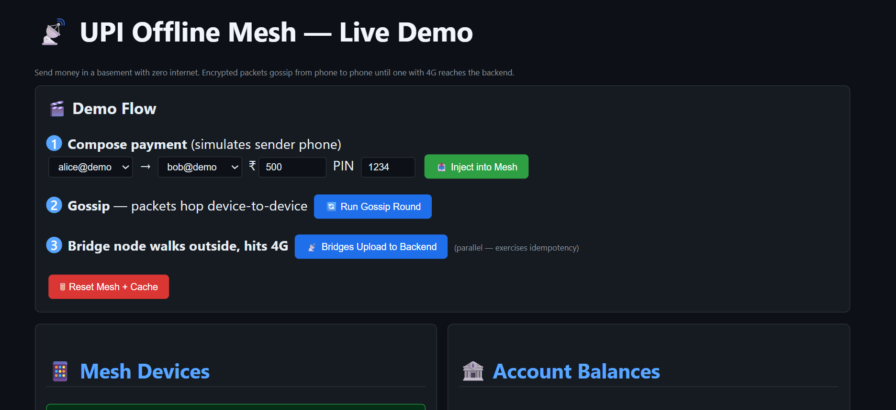
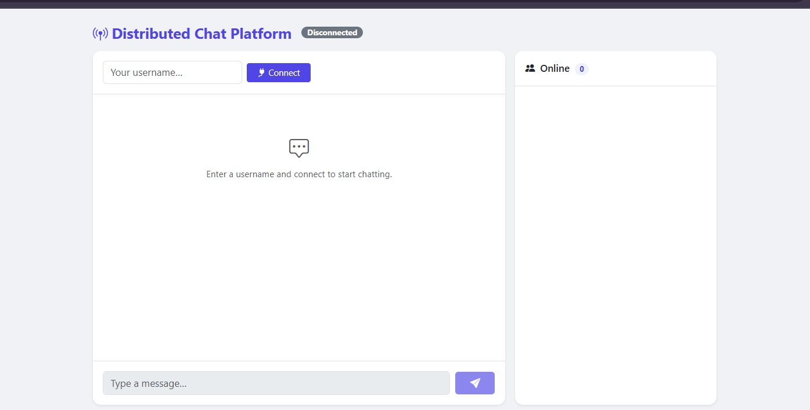
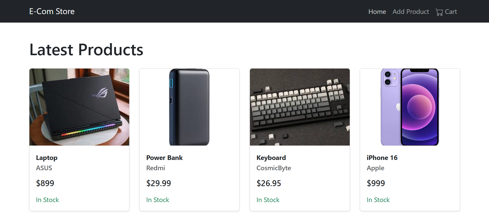
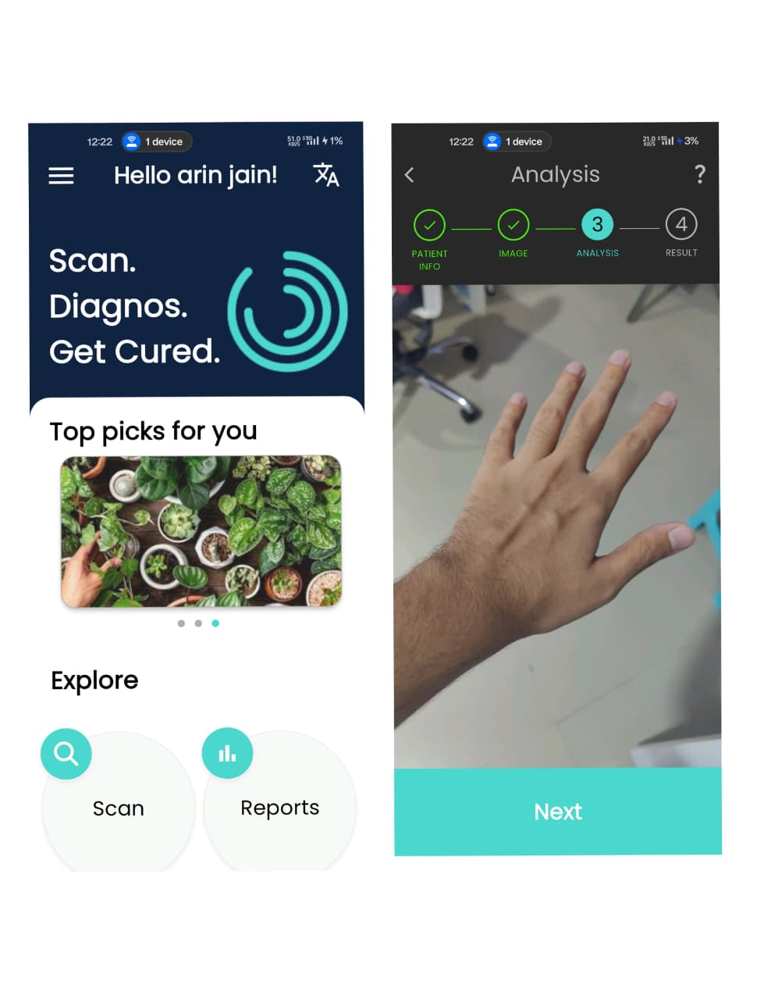

About
Software Engineer | Built Distributed Systems, Fintech Systems using spring boot | Ex-Intern @SourceBow | Solved 650+ DSA Problems
Skills
Frontend
Backend
Design
Other
Projects

A Spring Boot backend that demonstrates offline UPI payments routed through a Bluetooth-style mesh network

A production-grade, horizontally scalable chat system built with Spring Boot, WebSockets, Redis Pub/Sub, and an asynchronous AI moderation pipeline powered by a locally-hosted Llama 3 model.

An E-commerce Application which allows the admin to create, delete, update the product.

Built a mobile health application leveraging deep learning (CNN + LSTM + Self‑Attention) to detect and classify skin conditions from images.
Developed with Flutter for the frontend and Firebase for backend services, integrated TensorFlow Lite for on‑device inference, and implemented features like automated diagnosis reports, consultation scheduling, medication reminders, and a personal health dashboard.
Designed to improve dermatological access for underserved populations by providing real‑time, privacy‑preserving skin assessments.
Experience
Software Development Engineer Intern
Sourcebow Technologies
• Contributed in developing core backend infrastructure for Research-Driven Investment Baskets,while applying idempotency controls to guarantee that no duplicate trades were placed during network drops. • Enforced high code quality standards by authoring comprehensive JUnit test suites, consistently maintaining 80%+ unit test coverage and drastically reducing regression bugs during active Agile sprint cycles. • Integrated Juspay payment workflows, ensuring reliable processing of 4.5L+ in monthly transactions. • Engineered an asynchronous state reconciliation engine using background GCP Cloud Scheduler to automatically poll the Juspay API for transactions stuck in a PENDING state, reduced abandoned/stuck orders by 18% and completely eliminated manual support intervention for dropped webhooks. • Led systematic refactoring of traditional Java components to Java 8 standards, while Identifying and fixing regression errors during the refactoring process that improved code readability and cut redundant logic across 25+ java classes significantly reducing 25% cognitive complexity and 10% cyclomatic complexity of the codebase measured using SonarQube.
Education
Bachelor of Technology
SRM University, Sonipat, Haryana
Computer Science
Arin Jain © 2026